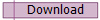

Netscape Navigator
Netscape Navigator is a discontinued internet browser, and was the main competitor to Internet Explorer. It's market share dropped sharply in the late 1990s due to IE gaining popularity. It was superseded by Mozilla Firefox.
|
|
Netscape Navigator is a discontinued internet browser, and was the main competitor to Internet Explorer. It's market share dropped sharply in the late 1990s due to IE gaining popularity. It was superseded by Mozilla Firefox. |
 |